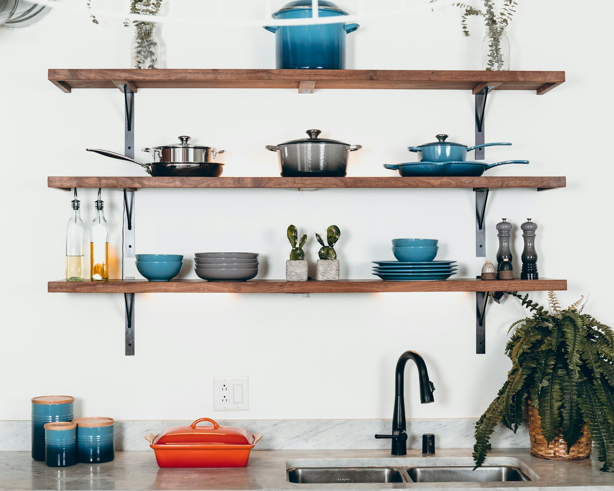

Achter de gids
Goed kookgerei begint
bij jouw dagelijks leven.
Je wilt lekker koken, zonder eerst een studie van pannen te maken. Daarom maken we de verschillen begrijpelijk en de keuze overzichtelijk.

Een gids voor de keuken van elke dag.
Een snelle maaltijd na je werk. Iets uitgebreiders in het weekend. Of gewoon die ene pan die je bijna elke dag uit de kast haalt. Goed kookgerei moet passen bij de manier waarop jij kookt.
Kookgereigids helpt je door het aanbod heen. Wat is belangrijk bij een pannenset? Waar let je op bij pannen voor inductie? En wanneer is een losse koekenpan een logischere keuze dan nóg een complete set?
We leggen de verschillen uit in gewone taal. Met aandacht voor materiaal, gebruik, onderhoud en de informatie die je vóór een aankoop wilt hebben.
Ontdek de onderwerpenJouw keuken komt eerst.
De beste keuze begint bij wat je maakt, voor hoeveel mensen en op welke kookplaat. Een populaire pan is niet automatisch jouw beste pan.
De afweging telt.
We kijken verder dan een mooie productfoto. Ook gewicht, formaat, onderhoud en praktische beperkingen horen bij een eerlijk advies.
Helder over de basis.
We benoemen onze bronnen en doen geen uitspraken alsof we zelf met een product hebben gekookt. Een specificatie is geen testuitslag.
Hoe wij pannen beoordelen
Je mag weten
waar ons advies
vandaan komt.
We voeren geen eigen producttests uit. Onze werkwijze draait om bronnen vergelijken, praktische verschillen uitleggen en onzekerheden zichtbaar maken.
Geen verzonnen zekerheid.
Een fabrikant kan een eigenschap opgeven. Een gebruiker kan een ervaring delen. We behandelen die informatie niet alsof het hetzelfde bewijs is.
We beginnen bij de vraag.
Welke keuze moet jij kunnen maken? We bakenen het onderwerp af en benoemen de eigenschappen die daarvoor relevant zijn.
We bekijken de specificaties.
Materiaal, formaat, warmtebron en onderhoud komen uit de productinformatie en handleidingen. Bij twijfel is de fabrikant het aanspreekpunt.
We leggen bronnen naast elkaar.
Openbare tests en gebruikersreviews kunnen extra context geven. We noemen de bron en presenteren ervaringen niet als onze eigen bevindingen.
We maken de afweging begrijpelijk.
Wat past bij jouw gebruik, en wat vraagt extra aandacht? Je krijgt uitleg waarmee je zelf kunt kiezen.
Open over affiliate-links
Jij kiest.
Ook als wij een
commissie ontvangen.
Een affiliate-link verwijst naar een winkel. Koop je via zo’n link, dan ontvangen wij mogelijk een commissie. Dat kost jou niets extra en beïnvloedt ons oordeel niet.
Bij affiliate-links vermelden we dat duidelijk. Prijzen, voorraad, bezorging en retourvoorwaarden worden door de verkoper bepaald; controleer die altijd bij de winkel voordat je bestelt.
Deze gids is geen webshop. Voor een bestelling, betaling of retour kun je terecht bij de winkel waar je hebt gekocht.
Minder twijfelen. Meer lekker koken.
Begin bij jouw kookgewoonten. De juiste pan volgt vanzelf.